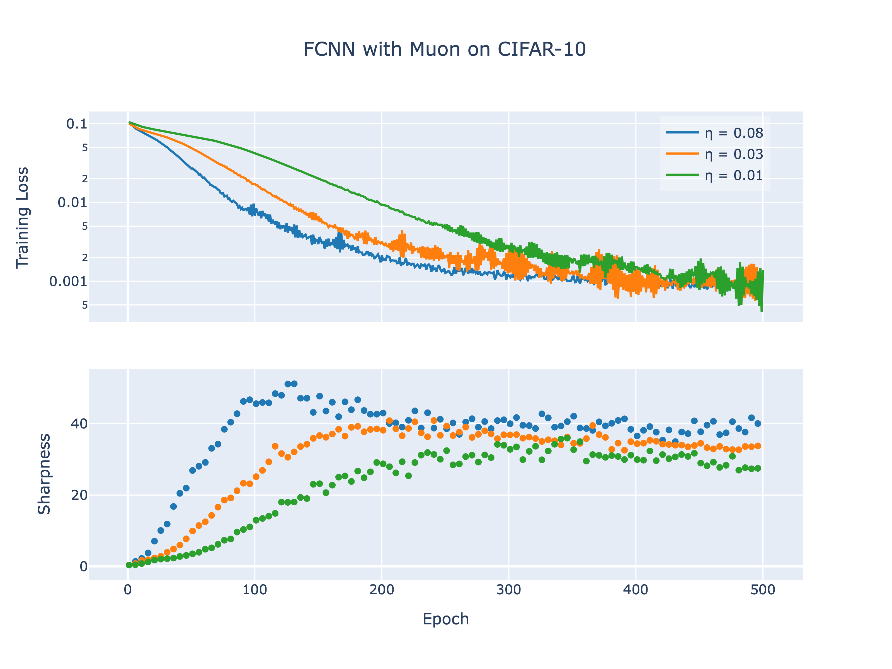
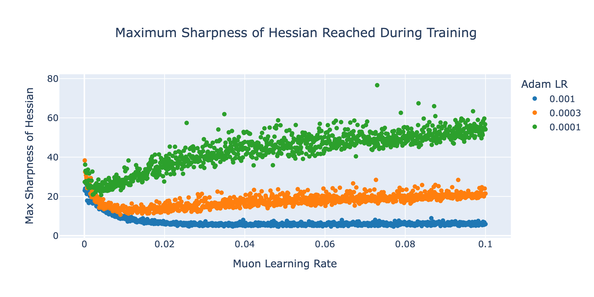

on the
Edge of
stability.
Exploring the delicate balance between sharpness and stability in deep learning, expanding on prior research by investigating how modern optimizers interact with the edge of stability, and providing insights into how these dynamics influence training outcomes and generalization in deep neural networks.
Sharpness &
Stability
In deep learning, sharpness refers to the curvature of the loss landscape at a specific point. Mathematically, it is the maximum eigenvalue of the Hessian matrix, the second order derivative, of the loss function. When training, a process called progressive sharpening occurs, in which the sharpness gradually increases. Progressive sharpening continues to occur until sharpness reaches a threshold of \(2 / \eta\), where \(\eta\) is the learning rate, where it then enters a regime called the edge of stability. This edge of stability is characterized by the stoppage of progressive sharpnening and sporadic oscillations in the still decreasing training loss.
Adjust the sliders to see how Gradient Descent behaves on a simple quadratic loss landscape: \(f(x) = \frac{1}{2} \lambda x^2\). By taking the second derivative, \(\frac{d^2f}{dx^2} = \lambda\), we see that sharpness is defined by \(\lambda\).
Notice that as long as the learning rate \(\eta\) is strictly less than \(2/\lambda\), the optimizer successfully converges to the minimum at the bottom of the curve.
However, if you push the learning rate or the sharpness too high so that \(\eta > 2/\lambda\), the updates become unstable. The optimizer overshoots the minimum by an increasingly large margin at each step, violently diverging up the walls of the loss landscape.
Gradient Descent (GD) is the foundational optimization algorithm used to train deep neural networks. It operates by calculating the gradient of the loss function with respect to the model's parameters across the entire training dataset. The network's parameters are then updated by taking a step in the direction of the steepest descent, scaled by a fixed learning rate, \(\eta\). Mathematically, this deterministic update rule is defined as \(\theta_{t+1} = \theta_t - \eta \nabla L(\theta_t)\). Note that while full-batch Gradient Descent is often too computationally expensive for modern, large-scale datasets, it is often used as the theoretical bedrock for analyzing convergence and training dynamics, as shown below.
In the context of the Edge of Stability, full-batch GD exhibits counterintuitive behavior. Classical convex optimization theory dictates that GD will only converge stably if the learning rate is strictly bounded by the curvature of the loss landscape, specifically when \(\eta < 2 / \lambda_{max}\), where \(\lambda_{max}\) represents the sharpness. However, during the progressive sharpening phase of neural network training, GD naturally drives the loss landscape's curvature upward until it perfectly collides with this theoretical limit. Rather than diverging catastrophically when hitting \(2 / \eta\), GD rides this boundary. The optimizer enters the Edge of Stability, bouncing back and forth across the walls of the local minima, resulting in the non-monotonic but ultimately downward-trending loss curves characteristic of modern deep learning.
Unlike its full-batch counterpart, Stochastic Gradient Descent (SGD) approximates the true gradient by sampling a small subset of the data, or a "mini-batch," at each step. This introduces stochastic noise into the optimization process, defined by the update rule \(\theta_{t+1} = \theta_t - \eta \nabla L_B(\theta_t)\). In the context of the Edge of Stability, while full-batch GD is constrained by the maximum eigenvalue of the Hessian across the entire dataset, SGD interacts with the local batch sharpness, which measures the expected directional curvature of the mini-batch loss surface along the direction of the step. It is this batch sharpness, not the global sharpness, that ends up converging to the \(2 / \eta\) boundary under SGD.
Sharpness seems to be influenced by the batch size, with larger batch sizes showcasing sharpness values closer to the stability boundary of \(2 / \eta\). Batch sizes also appears to have an inverted relationship on batch sharpness and full Hessian sharpness. Low batch sizes show higher batch sharpness values but lower full Hessian sharpness values.
Illustrated are 3 different batch sizes \(\mathcal{B}\) used to train the same model with a learning rate of \(\eta = 0.05\).
Adam is an adaptive optimizer that scales each parameter update using a preconditioner built from recent gradients. Unlike plain gradient descent, Adam is not limited by the raw curvature of the loss. It operates at the Adaptive Edge of Stability (AEoS), where the maximum eigenvalue of the preconditioned Hessian, called the preconditioned sharpness \(\lambda_A\), stays near the stability threshold
\[\lambda_{\text{preconditioned max}} < \frac{(1+\beta_1)2}{(1-\beta_1)\eta}\]
Here \(\eta\) is the learning rate and \(\beta_1\) is Adam’s first-moment decay, which controls how strongly recent gradients influence the momentum term. This is what lets Adam keep moving through high-curvature regions without becoming unstable in the same way as non-adaptive methods.
What the plots below show. The first two plots compare how changing the learning rate \(\eta\) and the momentum parameter \(\beta_1\) affect both train loss and preconditioned sharpness over time. The bottom plot highlights the main point: the solid curves show the raw sharpness \(\lambda_H\) continuing to rise, while the dashed curves show the preconditioned sharpness \(\lambda_A\) staying close to the edge. Adam keeps adapting as curvature grows, which is what makes its dynamics different.
Muon is a matrix-based optimizer designed for application to inner weight matrices of neural networks. Instead of adapting each parameter independently, Muon operates on the entire weight matrix of a layer and modifies the update using matrix structure. In particular, it first forms a momentum update and then orthogonalizes this update before applying it to the parameters.
Muon shows some characteristics of the edge of stability regime like progressive sharpening and destabilization of the loss. However, there is a major difference with Muon is non-monotonic relationship between the learning rate and the maximum sharpness reached during training. In coordinate optimizers, this relationship is strictly inversely proportional: as the learning rate decreases, the network enters sharper regions of the loss landscape. While this relationship is true for very small Muon learning rates, it is the opposite for most learning rates. As learning rate increases, we see that the network can tolerate sharper loss regions.


Shampoo is a structured second-order optimizer that approximates curvature information while remaining practical for large neural networks. Instead of maintaining a full preconditioning matrix over all parameters, Shampoo factorizes curvature along each tensor dimension. For a weight matrix \(W \in \mathbb{R}^{m \times n}\) with gradient \(G_t\), it accumulates second-moment statistics separately for the row and column directions.
\[ L_t = L_{t-1} + G_t G_t^\top, \qquad R_t = R_{t-1} + G_t^\top G_t \]
These matrices act as left and right preconditioners that rescale the gradient during the update. The resulting update rule \(W_{t+1} = W_t - \eta \, L_t^{-1/4} \tilde{G}_t R_t^{-1/4}\) approximates the inverse square root of a Kronecker-factored curvature matrix \(L_t^{1/2} \otimes R_t^{1/2}\). Because the gradient is rescaled differently along each dimension, Shampoo produces direction-dependent step sizes that help it adapt to sharp and flat directions of the loss landscape.
Mattis suscipit libero placerat egestas cursus quisque egestas maecenas. Facilisi facilisi euismod sem mauris eu ac lorem vivamus et posuere. Quam posuere porttitor nisi senectus pulvinar mollis tempor mauris massa nam. Condimentum fringilla pretium, nec lobortis vivamus mattis. Sollicitudin eleifend viverra et ridiculus vel egestas libero.
Training deep networks is not just about driving the loss down. The curvature of the loss landscape, or sharpness, keeps changing as we train, and optimizers respond in different ways. We started from the idea that sharpness tends to rise until it hits a stability limit tied to the learning rate. That’s the edge of stability, and in practice you see it as loss curves that bounce around while still trending downward.
Full-batch gradient descent rides that boundary. It pushes sharpness up until it sits at \(2/\eta\), then keeps going without blowing up. SGD does something similar, except the thing that matters is batch sharpness, not the Hessian over the full dataset. Adam is different. It adapts to the landscape, so its preconditioned sharpness stays near a different threshold and it can keep stepping into high-curvature regions while the raw sharpness of the loss keeps growing. The plots we showed let you see how \(\eta\) and \(\beta_1\) shape both the loss and the preconditioned sharpness over time. Muon and Shampoo take these ideas further with other preconditioning strategies.
If you understand how each optimizer hits that edge, it’s easier to see why training looks the way it does and how to tune or design methods that are fast and stable. We hope this page gives you a clear picture of that.